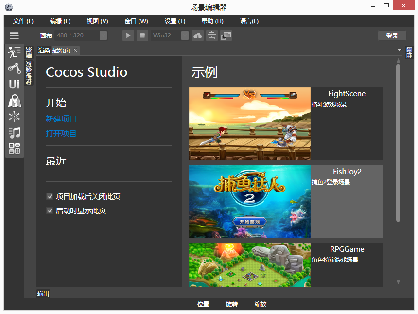

Scene Editor简介
概述

Scene编辑器可以整合我们Cocos Studio其他编辑器的资源，并将其处理成一个游戏场景。
工作区
渲染面板
对象结构面板
属性面板
资源面板
输出面板
组件面板
预览面板
菜单栏
快捷工具面板
状态栏
设备连接
模拟器选择
触发器
组件
精灵组件
地图组件
例子组件
动画组件
声音组件
UI组件
自定义属性组件
导出项目
点此查看：如何导出UI工程项目
在项目中使用
点此查看：如何使用UI工程
Copyright © 2013
Cocos Studio.org
. All Rights Reserved. 版本:1.4.0.0